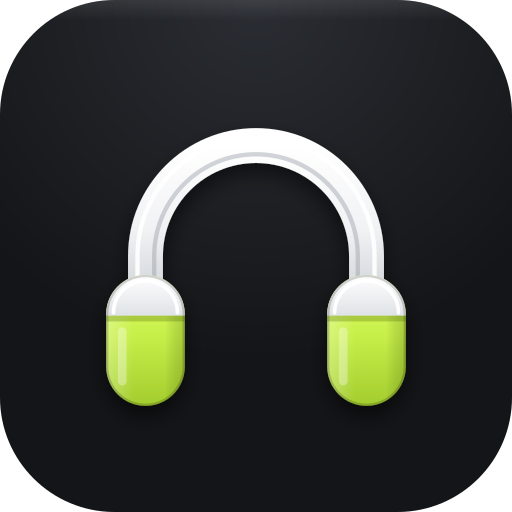
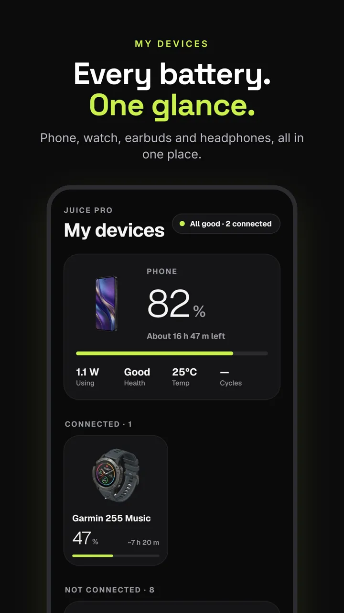
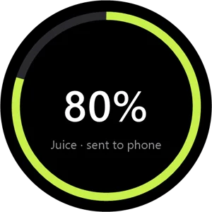
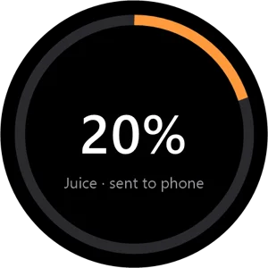
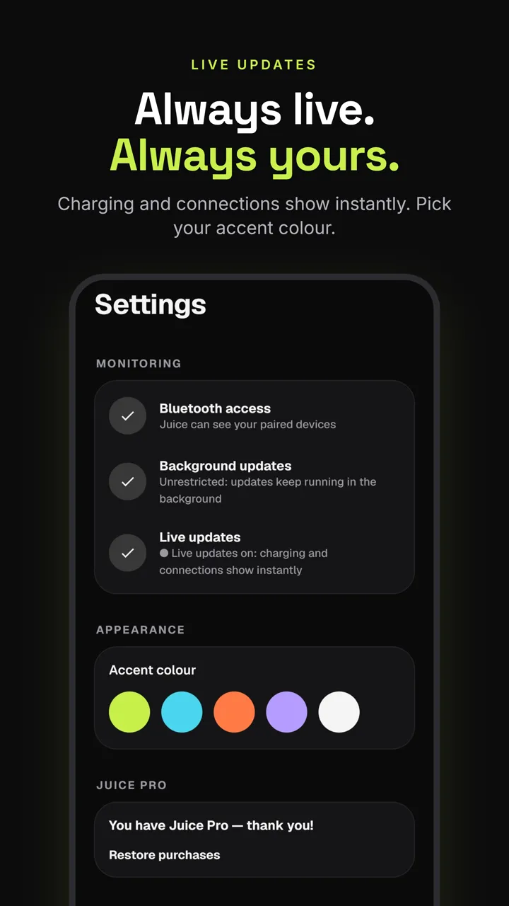

Juice: Garmin watch setup
Show your Garmin watch battery in Juice widgets on Android. It takes about five minutes.
Garmin watch support is part of Juice Pro, a one-time purchase with no subscription. The Juice watch app itself is free.
Get the Juice watch app on Connect IQ
About Juice
Juice shows battery and connection health for your phone, Bluetooth devices and Garmin watch in one Android app, with resizable home-screen widgets. The Garmin support comes from a small companion app that runs on your watch.


How it works
Garmin watches don't share their battery over normal Bluetooth. Instead, the Juice app on your watch reads its battery and sends it to your phone through the Garmin Connect app, straight away when opened and then every 5 minutes. Juice on your phone shows it in your widgets. Nothing is sent anywhere else.
What you need
- Juice Pro installed on your Android phone (Android 12 or newer).
- The Garmin Connect app on your phone, with your watch already paired.
- The Juice watch app from the Connect IQ Store. It's built for every Garmin watch that can run watch apps, including Forerunner 255/265/955 and Fenix 7/8.
Setup steps
- Check your watch is connected. Open Garmin Connect on your phone and make sure your watch shows as connected.
- Install the watch app. Open the Juice page in the Connect IQ Store, or search for Juice (developer sabrkei) in the Connect IQ Store inside Garmin Connect, and install it on your watch.
- Sync. Let Garmin Connect sync so the app lands on your watch.
- Open Juice on the watch once. It sends its battery to your phone straight away, then every 5 minutes.
- Add a widget. In Juice on your phone, add a widget (or edit one) and choose your Garmin watch from the device list.
- Check it's working. Open Juice's Settings → Garmin watches. It should say your watch is sending its battery.


Check your settings
For reliable updates, the Settings screen in Juice should show Bluetooth access granted, background updates set to Unrestricted, and live updates on. Juice Pro shows as unlocked once purchased.

Troubleshooting
"No watch has reported yet"
Open the Juice app on the watch once, make sure Garmin Connect shows the watch connected, then tap a Juice widget on your phone to ask for a fresh reading.
Watch missing from the device list
Open Garmin Connect, wait for it to sync, then reopen Juice. Juice only sees watches Garmin Connect knows about.
Battery looks stale
Android may be stopping Juice in the background. In Android settings set Juice's battery usage to Unrestricted, and keep Garmin Connect allowed to run in the background too.
Still stuck?
Reinstall the Juice watch app from the Connect IQ Store, force-stop Garmin Connect and open it again, then repeat steps 4–6.